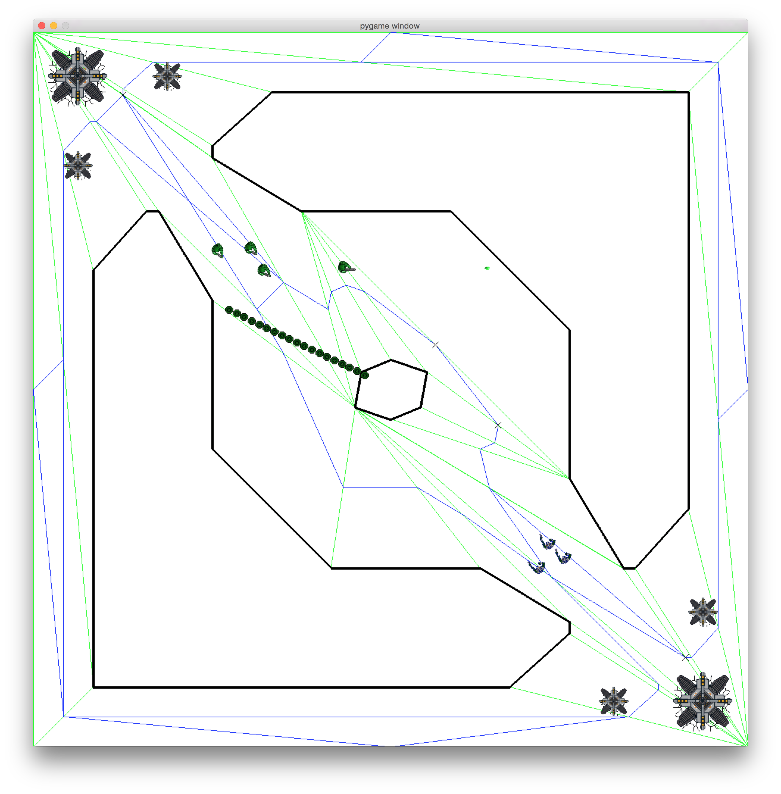

A Multiplayer Online Battle Arena (MOBA) is a form of Real-Time Strategy game in which the player controls a powerful agent called the "Hero" in a world populated with simple, weak, fully computer-controlled agents called "Minions." In this assignment, we will implement the decision-making for Minion agents.
A MOBA has two teams. Each team has a base, which is protected by a number of towers. The goal is to destroy the opponent's base. In MOBAs, bases periodically spawn Minion agents, who automatically attack the enemy towers and bases. Towers and bases can defend themselves; they target Minions before targeting Heroes. Thus Minions provide cover for Heroes, who are much more powerful.
In this assignment, you will implement a MOBA that only has Minions (no Heroes).
Typically in a MOBA there are three routes Minions can follow to get to the enemy base—a route through the center with a large melee area, and two routes around the edges of the map—and minions would randomly follow one path. In the MOBA we are building, minions will use A* to follow the shortest path. Gates will randomly appear, sometimes blocking a route and Minions will need to plan paths along alternate routes. There will always be one route open. We will provide an A* implementation.
A recommended minion decision-making procedure is as follows. If there are towers, Minions automatically navigate to within attacking distance of an enemy tower. If there are no enemy towers, Minions automatically navigate to within attacking distance of enemy bases. Minions can shoot at towers, bases, and enemy agents. Targets are prioritized as follows: closest enemy tower, closest enemy base, closest enemy minion.
The bases will automatically spawn Minion agents, after a fixed interval of time; bases will be limited in the number of Minions that can be alive at any given time. Bases are invulnerable as long as there are towers remaining, so towers must be targeted and destroyed first.
In this assignment, you will implement a Finite State Machine (FSM) for Minion agents. The base Minion class has state machine running code built into it and each state is an object that implements the behavior of the agent in that state by telling the agent what to do and where to go. Specifically, states have code in their execute() functions that act as the decision-making "brain" of the Minion, instructing it what to do at every tick of the game. The Minion agent class will automatically start off in an Idle state. You must implement at least two other states, and modify the Idle state to immediately transition to one of the other states you have implemented.
Recommended states for a Minion are: move, attack tower, attack base, attack enemy minion, attack enemy hero. These are suggestions and not all are strictly necessary.
You must implement Minion AI that can win the game by destroying the enemy base.
One difference to the standard MOBA is that the base will periodically produce a special type of agent called a Hunter, which is will stay within a certain radius of the base and defend the base. It is indestructable and has a very powerful weapon, but will return to the base after a duration. Unlike a MOBA where the Minions must simple traverse to the base and attack, one might want to have Minions that are smart enough to recognize when they should stay away from the base and the Hunter.
GameWorld is defined in core.py
Member functions:
Obstacle is defined in core.py. An Obstacle is a polygon through which Agents cannot move.
Member functions:
Agent is defined in core.py. Agent is the class type of the player avatar or non-player characters. Aside from drawing itself, an Agent knows how to move (which it inherits from its super-class Mover) and shoot. If it is moving to a particular destination, it updates its location every tick. Agents maintain a timer to control how often it can shoot.
While the Agent class does know how to move in a straight line toward a given point, it does not know how to move around an environment without colliding with obstacles. When instructed to move, it will move in a straight line from its current position to a target position. The intelligence in how to avoid obstacles is contained in a sub-component of the Agent, called the Navigator.
Additionally: (1) Agents have hitpoints. (2) Agents can be part of a team. (3) Agents can shoot in the direction they are facing.
Member variables:
Member functions:
Note: To shoot at something, first turn the agent to face the target (or to the point the agent wishes to fire at) with turnToFace() and then call shoot().
A StateMachine implements the generic functionality of a Finite State Machine. In this assignment, StateMachine is one of the base classes of Minions, thus every Minion is a StateMachine. StateMachines know what the current state is and tell the current state to execute at every update.
Member variables:
Member functions:
Note: A StateMachine will not change states to any type of state that is not listed in StateMachine.states.
An abstract base class for all states in a StateMachine. States are more than symbols. Each state has an execute() function that gets called every tick of the game and controls the behavior of the agent.
Member variables:
Member functions:
For execute() to control the agent, it must make call-backs via the agent member variables. For example, if the behavior of a state is to make the agent shoot, the execute() function can call self.agent.shoot(). To change states, call back to self.agent.changeState(new_state_type).
When changeState() is called, arguments can be passed to the new state when it is initialized. The constructor for the base State class takes a number of arguments, as a list. But it doesn't know what they are meant to be. Constructors for sub-classes can look at the arguments passed in through args and pick out the relevant information and store it or compute with it. For example, one might want a Taunt state, and pass in an argument for the thing to be taunted. For example: the agent could call self.changeState(Taunt, enemyagent). Even though the Taunt sub-class is expecting an argument, it will just be passed in to the constructor as args[0]. Use parseArgs(args) to capture the parameter and use it. For example:
A StateAgent is a sub-class of Agent and StateMachine. Use getStateType() to determine what state the agent is in.
A VisionAgent is a sub-class of StateAgent. VisionAgent is given a viewangle, a number of degrees that the agent can see. Every tick, the VisionAgent asks the GameWorld what it can see, based on its view angle, and maintains a list of visible Movers (agents, bullets, towers, and bases). For this assignment, Minions have a view angle of 360 degrees, meaning they can see everything around them irrespective of what direction they are facing.
Member variables:
Member functions:
A sub-class of VisionAgent (and hence also a StateAgent and a StateMachine), specialized for the MOBA. MOBAAgents do two noteworthy things. First, MOBAAgents die whenever they collide with an Obstacle. Second, they can compute a list of points in navigable space in the event that the agent needs to choose a point to move to without worrying about whether that point is inside an Obstacle (the agent will still have to figure out if it can actually move there).
Member variables:
Member functions:
Abstract base class of MyMinion, which is a sub-type of MOBAAgent. Otherwise doesn't add any functionality.
Abstract base class, which is a sub-type of MOBAAgent. Otherwise doesn't add any functionality. The player-controlled agent is a Hero.
A special Bullet class for the MOBA. MOBABullets differ from regular bullets in that they are range-limited.
There are four sub-classes of MOBABullet: SmallBullet, BigBullet, BaseBullet, and TowerBullet. These bullets are specific to Minions, Heroes, Bases, and Towers, respectively and do different amounts of damage.
Each team in a MOBA has a Base. Bases spawn minions at regular intervals as long as the maximum number of minions allowed at any given time has not been reached. Bases cannot be damaged as long as there are towers present on the same team. Bases can heal Heroes—if a Hero touches a base, its hitpoints are restored to maximum value.
Member variables:
Member functions:
Bases are defended by towers, which will shoot at the closest unit of the enemy team. Towers will prioritize minions over heros when selecting targets to shoot at.
Member variables:
Member functions:
GatedWorld is defined in core.py. A GatedWorld is a sub-class of GameWorld that has gates. Gates are walls that block the movement of Agents and move around randomly after regular intervals of time. There can be any number of gates. When the gates move, no gate will show up within 4.0 radiuses of an Agent. This means sometimes there are fewer than the maximum allowed gates.
If the user presses the 'g' key, a gate will appear in the nearest place to the cursor that a gate is allowed to appear. Light gray lines indicate where gates can appear. This may cause another gate to disappear if adding a gate exceeds the maximum number of gates allowed.
Member functions:
A special type of GameWorld for MOBAs. MOBAWorld is a type of GatedWorld. The MOBAWorld keeps track of bases and towers, in addition to NPCs, Bullets, and the agent.
Member functions:
Navigator is defined in core.py. A Navigator contains the smarts for how to get around in the game world without running into obstacles. Think of it as a brain that gets attached to an agent that controls its movement. Its primary function is to compute a path between two points that steers the Agent clear of any obstacles. A path is a set of intermediate way-points that the agent should navigate to in pursuit of arriving safely at its ultimate destination. Path planning can be done in many different ways and different AI techniques will sub-class from Navigator. Once a path is computed, it sends call-back messages to the Agent to move from intermediate way-point to intermediate way-point.
Member variables:
Member functions:
PathNetworkNavigator is defined in core.py. A PathNetworkNavigator is a specialization of a Navigator that works on path networks and contains the smarts for how to get around in the game world. Its primary function is to compute a path between two points that steers the Agent clear of any obstacles.
Member variables:
Member functions:
AStarNavigator2 is defined in astarnavigator2.py. AStarNavigator2 uses the A* algorithm to find a path from the Agent's current location to a desired destination, given a path network, and factoring in the possibility that any edge in the network may be blocked. If a path is found but dynamically becomes unfollowable, AStarNavigator2 will attempt to replan. If no valid path is found, the navigator will instruct the Agent to wait for one to open up.
Member functions:
The AStarNavigator2.py file is obfuscated. However you can update mySmooth(), myUpdate(), or shortcutPath(), and sub-functions to alter the behavior of the navigator.
Each base will periodically produce a Hunter agent, which looks like a small tower, but can move. It will move to different positions within a certain radius of the Base. The Hunter is indestructable and has a very strong weapon.
Miscellaneous utility functions are found in utils.py.
To complete this assignment, you must implement Minion AI. Write at least two State classes, and modify the Idle state class to transition to these customized states.
To run the project code, use runmobacompetition.py to run different Minion types against each other. Example calls are:
BaselineMinion is a bare-bones implementation of Minion AI that you can use to test against. BaselineMinion agents simply navigate to the nearest tower (or base if there are no remaining towers) and shoot.
The following steps are required to complete the assignment.
Step 1: We have provided you with two versions of the astarnavigator solution for you to use - astarnavigator-smooth.py and astarnavigator-nosmooth.py. You may decide which of these to use and must rename the file to astarnavigator2.py for testing and submission.
Step 2: Implement at least four state classes in MyMinion.py that sub-class from State (not including Idle). Implement their enter(), exit(), execute(), constructors, and parseArgs() as necessary. We suggest a Move class, an Attack Tower class, an Attack Base class at minimum, and one other to deal with Hunters, but your design could vary.
Step 3: Modify the execute() function in the Idle class in MyMinion.py. Minions automatically start in the Idle state. The main purpose of the Idle class is to transition to another state.
Step 4: Modify the constructor of MyMinion in MyMinion.py to add any new states to self.states. States cannot be executed unless their class names are in self.states. Make sure you do not remove Idle from the list of states.
The instructor will provide a baseline opponent, BaselineMinion, which is a simple implementation of minion AI in which a minion navigates directly to the nearest tower (or base if all towers are destroyed) and shoots as soon as within range.
The following grading criteria will be used:
Games will be run from both sides of the map.
Submissions will receive no points if they do not implement and use at least four states.
Minions are not allowed to hide or gather on top of their home base. They can gather elsewhere.
The player-controlled character is a Hero with team=0. You can use the player-controlled Hero to test whether your minions differentiate Heroes from other NPCs. Note that the player character is not in MOBAWorld.getNPCs(), so if you want to target the player-controlled character you may want to assemble a list of targets; i.e., targets = world.getEnemyNPCs(team) + [world.getAgent()]
Use agent.getVisible() and agent.getVisibleType() to figure out what the agent can shoot at.
Remember, an agent shoots in the direction it is facing, so use agent.turnToFace(enemy) before agent.shoot().
To submit your solution, upload your modified MyMinion.py, and astarnavigator2.py to Gradescope. These are the only files you are allowed to modify
You should not modify any other files in the game engine.
DO NOT upload the entire game engine.